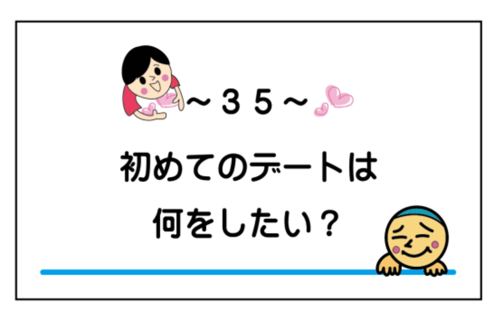

| 『最初のトーク術』婚活マニュアル ちょいムズ編 : ～好印象＆また会いたいと思わせるマル秘テクニック～ 結婚活動 | |
| 結婚活動コーチングトレーナー 入倉秀 | |
| (2019) | |
『最初のトーク術』婚活マニュアル ちょいムズ編
～好印象＆また会いたいと思わせるマル秘テクニック～
一般社団法人 日本地域活性化事業協会 代表理事

婚活・恋活イベントを運営し、１１００回以上主催して２万 人( ２０１９年５月時 点) を超える参加者を拝見させて頂いて...、実は婚活・恋活イベントで効果的な方法があるのです。実際に私が主催しているセミナーや書籍『結婚活動必勝マニュアル』（詳細は参考程度に巻末に記載）を読んで実行して頂き効果が出ている人が続出しています。ではなぜ、結婚活動においてうまく行く人とうまく行かない人が出るのか...。そもそも現在の平成において結婚とは、
【資格や試験を受けるのと同じことです】
自動車免許や就職試験のように誰でも受かる可能性があったり、様々なタイプの会社があるように自分に合った就職先があるかと思います。実は私入倉も就職試験で３０社程受けましたが、内定を頂いたのは１社でした。今思えば結婚活動と似ているなと思います。就職では理想の会社と相思相愛（内定）ですが、結婚活動では気になる異性と相思相愛で結婚につながります。話を戻しますと、
『うまくいくやり方を知っているかどうかであなたの人生が決まる』

もう一度いいますね。あなたがもし結婚したいのなら平成においての結婚活動の仕方を知っていれば実は簡単に結婚出来る可能性があります。私入倉は婚活イベント主催者ですが、婚活歴５年の経験者です。皆さんと同じようにうまくいかない...断られ、ふられたりを繰り返した時期もありました。ですが、無事に結婚することができました。私はお世辞にもイケメンではありません。笑 坊主ですし、顔が恐いですしどちらかというと無愛想です。ですが婚活歴５年で何とか卒業出来ました。卒業できたのも結婚活動のうまくいくやり方を理解出来たからだと思っています。そして今婚活イベントを主催しながら真剣に恋愛・結婚を考える独身者の方々に書籍やセミナーなどを通して結婚活動のうまくいく秘訣をお伝えしています。
『結婚活動のやり方は書籍やセミナー・メルマガなどで言っていることは理解出来てきたが、実践編としてのアドバイスがほしい...』
というご意見を多数頂き...、今回は実際に当団体のイベントで利用している『最初のトークカード』とうまくコラボしたトーク術をご紹介させて頂きます。現実的な話で出会って１カ月で結婚している方も多数います。確かに一握りの話しかもしれませんが可能性としてはもちろんあります。もっと多くの頑張っている方に早く結果を出してほしい。けど実践と言う部分で恋愛経験や結婚活動での知識と行動の
【婚活力】
というのは不足している方が多く、なかなかうまく行かない方もいらっしゃいます。では手っとり早くうまく行く方法...、必勝マニュアルのような結婚活動の知識があれば、異性とのトーク力が身に着けば比較的相手にＯＫをもらいやすいです。冒頭の就職試験と同じように自分のことがうまく伝わればいいのです。でも婚活力が不足しているとうまく伝わらない...。非常に残念です。私の場合婚活中に自力でこのトーク術を実践と失敗を繰り返しながら構築していきました。でもそんなことしていると時間がかかりますし、方向性を間違えると確実に異性受けしないどころか婚活疲れに発展してしまい結婚する意欲が失せてしまいます。今回この書籍を使ってぜひ基本のトーク術を身につけて最短で成功して頂ければと思います。
今回この最初のトークカードという、異性との会話を基本としたカードを作らせて頂いた経緯として...
『異性と何を話していいのか分からない...』
『会話が盛り上がらないし話せるネタがない...』
というご相談を多く頂いておりまして...。ではそのきっかけを作れるカードがあれば比較的会話はしやすいのではないかと思い制作をしました。当初は婚活・恋活イベントで初対面の異性との会話で役立つというところにフォーカスし試作品を作成しました。試作品は通称『ラブカルタ』というラブ＝愛という部分にフォーカスしてお題を構成したため人によっては抵抗のある内容もあり、これだと多くの方にうまく活用してもらえないと思い...試作に試作を重ね、最初のトークカードが完成しました。まさしく、最初のトークで話せるベタな内容からお互いの距離を縮める事の出来るちょいムズ編まで我ながらの一品になりました。近年では、結婚活動という言葉が発祥し結婚するためには自分から活動しないと結婚できない時代になってしまいました。これは昭和時代には無かった風潮で...数十年前までは結婚適齢期になると必然的に回りから（会社の上司や先輩からの）紹介やお見合いなどから【妥当な異性】を紹介され
【誰でも結婚出来る時代背景】
がありました。情報化社会や個人情報プライバシーが厳密になってきた近年では、結婚の善き時代は終了し自分の結婚は自分で何とかしないとならなくなってしまいました。時代が進むにつれ生きやすい時代になりましたが、逆に結婚できにくい時代に突入した関係で、人口問題、晩婚化、非婚化、少子化、過疎化、少子高齢化と様々な社会現象の起因に繋がっているものと思います。もちろん昔に比べて今の独身者が結婚を望まない人が多いかと言うとそうでもないと思います。けど昔に比べて結婚の環境が一変してしまったため簡単には結婚できない...。
【自分で何とかしないと結婚出来ない時代】
になってしまいました。今の独身者の恋愛力・交際経験が少ないのではないのです。一昔前よりは恋愛力は上達はしているかと思うのですが、現状では結婚に対しては自力で何とかしなければならず...。さらにいうと親世代は自力というよりはサポートの影響が大きく、この結婚活動においては経験したことが無いが故に具体的なアドバイスが出来ずに独身者は何をすればいいのかわからないという経緯があります。もちろん、親を始め社会として独身者の結婚を斡旋していますが、拍車をかけるように
【結婚するまでの情報量と恋愛経験と知識に折り合いがついておらず】
結婚したいけど...恋愛したいけど...うまくいかない...というところでつまずいている独身者が多いのも事実です。話がかなりそれましたが...。ではこの自力で結婚活動をしなければならない時代で結婚するのには...恋愛経験や知識を蓄えないとならないのですがそんなこと言っているとどんどん加齢するという現実が待ち構えており晩婚化の一途に繋がってしまっている現実があります。そんな時代背景の中私入倉が社会に出来る事...ということで
【結婚活動の適切なやり方さえ理解してしまえば比較的簡単に結婚出来る】
と言う事実が分析出来ましたので、書籍【結婚活動必勝マニュアル（当巻末に流れを記載）】にて結婚までの各ステップで起こりうるポイントやうまくいかない原因をまとめさせて頂きました。実際にマニュアルを読んでうまくいかない方法からうまくいく方法に切り替えただけでお付合いや結婚する方がおかげさまで増加しています。
『じゃあそれだけでいいの？』
と思ったときに実際には起こりうる問題として、基本の異性との会話を勘違いしている人や、生活習慣や仕事の関係で異性慣れしておらず恋愛経験不足から進展しない方もいるという基本のコミュニケーション不足が問題になるケースもありました。今回最初のトークか―ドをきっかけに異性とのトークを円滑にして、次の展開に進んで頂ければと思っております。トークカードの内容のほとんどは...私入倉の結婚活動経験からも実証済です。実は私入倉も婚活歴５年の活動経験があり当初は全くと言っていいほど会話が苦手で...そんな状態ですから異性からモテるわけもなく...と言う苦い経験を何年もしました。私は元々工学部出身で最初の就職先も機械の研究開発設計職でしたので、異性と会話するというよりは機械や材料の金属と触れ合っている時間の方が長かったです（笑）。でもそんな私入倉でも、会話のコツを理解してしまえば異性と会話がすることができるようになり...無事婚活歴５年で結婚することが出来ました。そういう意味では会話に苦手意識がある方がいますが、それは単なる経験不足で誰でも会話の仕方され理解してしまえば会話は確実に上達します。そこは自信を持ってもらっていいと思います。まずは会話の基本となるきっかけのお題は大切です。しっかりと基本をマスターして異性と楽しい会話をしてみてくださいね。
ではそのトークカードについですが...。このカードは基本的な会話をマスターすることを目的としており、その具体的な内容として
『異性と何を話したらいいのか？』
と言う部分にフォーカスして具体的なお題で構成されています。トークカードマニュアルでは基本的なアドバイスとＮＧについてご紹介しており、各カードのポイントもまとめてあります。もちろんカードマニュアルが正解ではありません。そもそも正解などなく
【あなたの個性が相手に伝わり相手の個性を理解できる】
ことが大切です。あくまでもカードマニュアルはアドバイス的な立ち位置でご理解頂ければと思いますので、より具体的なカードの回答は控えてあります。個性が失われてしまいますので。そんなこといっても自分の回答に自信が持てないと言うときは入倉までメールまたは直接聞いてみてくださいね。最近の会話の傾向としては、
【自分では頑張って会話をしているがうまく次の展開に繋がらない...】
という方が多いのが現実問題としてあります。要は会話が盛り上がっていると自分では思ってもデートや連絡先の交換には至らないケースということです。これは会話のキャッチボールができていないことが要因です。本章の基本でお伝えしていますのでそこは確認してくださいね。異性との会話の仕方をしっかりと理解してお互い好印象になるようにぜひがんばってみてくださいね。最初のトークカードはお題が書かれたカードですが会話を円滑にするためのツールの一つです。くれぐれもカードのお題に問われ過ぎず、ときにはカードの話しから脱線して違う話題で盛り上がることもありですからね。
【ポイントは異性と次の展開にすすめるかどうか？】
であり
【会話が盛り上がること→連絡先の交換・デートには必ずしもならない】
ので注意してください。逆に会話が盛り上がらなくても相手に興味を持ってもらえれば連絡先の交換もデートも可能です。詳細は【結婚活動必勝マニュアル】に詳しく書いてありますのでご興味あればぜひ読んでみてください。
最初のトークカード【きっかけ編】
ではここから最初のトークカードの構成についてご紹介します。
【きっかけ編】
【ちょいムズ編】
の２種類があり、各５０枚のカードで構成されています。きっかけ編については、基本的に答えやすい日常的な内容やクローズドクエッション（ＹＥＳもしくはＮＯで答えられる質問）に近い形で選択で答えられる内容構成となっております。ですので、なかなか異性と会話が出来ない場合や緊張したりでうまく盛り上がらない場合はまずはこちらのきっかけ編がおすすめです。答えやすいですし簡単な質問ですので万人受けする内容となっています。このきっかけ編を使ってまずは会話の基本
【会話のキャッチボール】
をマスターして頂ければと思います。もちろんカードの内容であるお題は大切ですが、基本のやりとりをマスターしないことには次には進めませんので注意してください。簡単で答えやすい内容だからこそまずは基本に忠実に何度も練習してください。できればカードが無くてもそのお題は使えるようになるまで練習できると効果が著しくなってきますよ。
最初のトークカード【ちょいムズ編】
きっかけ編の中級編ということでチョイムズ編のご紹介です。こちらの質問は
【価値観や生活習慣、恋愛・結婚の考え方などがわかりやすく】
なっていますが、構成としてはオープンクエッション（ＹＥＳまたはＮＯで答えられない）が中心ですので、考えた上での回答がほぼ必須となります。中には選択式のカードもありますが、それなりの理由が大切な要素になってきます。きっかけ編がある程度理解できて、基本の会話のキャッチボールが出来るようになりましたらこちらのカードに進んで頂ければと思います。もちろん、きっかけ編をマスターしないとちょいムズ編が使えないと言う意味ではありませんので同時進行でちょいムズ編の内容を考えながら基本の会話のキャッチボールを理解して頂くこともいいかと思います。
『最初のトーク術』マニュアル ちょいムズ編
～目次～
７、関係が浅いうちは、冗談でも相手をバカにしたり否定しない（誤解を招く）
～１０～お付合いしたらこんな付き合い方をしたい な... ※会う頻度な ど ...
～４０～私はどんな性格に見える？一人一言で！ ※ありがとうを言いましょう！
～４１～交際相手で多い血液型は？（もしくは付き合いたい血液型）
～４９～今までにあった面倒な連絡の取り方は？ （回数や時間、内容）
一般解答（コミュニケーショントレーナーのスタッフなっちゃんの一般的な意見）とポイントとＮＧをご紹介させて頂きます。くれぐれもこのアドバイスに囚われることなく、オリジナリティある回答を考えて会話を盛り上げてくださいね。何度も言いますがお伝えすることは完全な正解では無いですし、あなたが考えた回答が間違っているわけではありません。基本的なアドバイスとＮＧです。ですので、極力具体例は控えてあります。個性をアピールしてもらいたいのでご自身の意見を考えてください。もし不安な場合は入倉までこの回答はどうか？と聞いてくださいね。メールでも直接でもお答えしますので。
１、恋愛コミュニケーション
まず最初に知っておいてほしい事が...、恋愛や結婚において大切な要素についてです。会話の基本についてはこの後お伝えするのですが、そもそもなぜこのような会話のマニュアルや【最初のトークカード】が必要なのか...。私入倉も婚活を始めた当初は、
『異性との会話は話せることを話せば会話は成り立つ』
と無意識に思い込んでいました。でもこれって大きな勘違いだということを婚活歴２、３年目でやっと気付き...。（皆さんにはもっと早い段階で気付いてもらいたいと思い本書を書いたということもあります）ただコミュニケーションを取れればうまくいくという幻想は吹き飛びました。実はきっかけとなったエピソードがありまして...。婚活イベントや合コンでコミュニケーション能力が高い人は異性からモテる？という固定概念があり、もちろんその場はうまくいくのですが、恋愛や結婚に発展しない方が多数いる...。逆に婚活イベントでも合コンでコミュニケーション能力が高そうじゃなくても...恋愛・結婚に発展している方がいる...という事実を知ってしまった時...
【必ずしもコミュニケーション能力が高いからと言って恋愛結婚できるわけではない】
という衝撃的な事実に気付いてしまいました。一般的なコミュニケーション能力というと...
【自己アピール→他者承認】
という過程でお互いのコミュニケーションを円滑にすることを第一に考える事かなと思います。けど実際の恋愛・結婚では、恋愛コミュニケーション能力...
【自己アピール→他者承認→共感→共同作業】
が出来ないと進展しませんし、通常のコミュニケーションの他者承認まで出来ていたとしてもその後一緒に何かが出来ないと恋愛や結婚まで進展しません。通常のコミュニケーションですと、その場が最優先されたり他者とうまくやっていくと言う部分では非常に有効な手段かと思いますが、恋愛・結婚においては同じ時間の共有であったり共に生活するということが大切な要素になります。ですので、自分を伝えて相手を理解することも大切ですがその後の
【共感や共同作業（生活）が出来るのか？】
という部分のウエイトが恋愛や結婚では大切です。本書では基本のトークについてご紹介させて頂いておりますし、表面的には【会話】という言葉がメインですが、恋愛コミュニケーションの観点からお伝えすると、その会話からお互い共感出来たり、一緒に共同作業が出来るのか？というイメージやワクワクが相手に伝わるかが大切な要素になります。カードの質問に対して自分なりの解答をすることで自分を伝えて相手を理解することも大切ですし悪いことではありません。伝えたいことは...
【自分の回答が正しい、間違っているではなく、その回答から相手との共感や共同作業のきっかけを作れるか？】

という部分です。実は通常の会話力というところで、この部分を分かっている人は恋愛コミュニケーション能力が高く、恋愛や結婚に発展しやすいと思います。自分の伝えたい事を伝えたり相手の話しをうまく聞くということはコミュニケーション能力が高いかもしれませんが、恋愛コミュニケーションの能力と言う部分ではイコールではありません。ぜひ勘違いなさらずに本書を読み進めて頂ければと思います。ポイントやＮＧについてもこの観点を基にアドバイスさせて頂いております。
２、会話のキャッチボール
基本で一番大切な
【会話のキャッチボール】
についてです。そもそもですが...、出会いの場（婚活・恋活）でも合コンでも１対１のデートでも...異性との交流で一番大切なのは会話のキャッチボールです。どちらかが一方的に話して聞き役に徹するのではなく、かといってお互い言いたい事を言い合うのではなく...、会話をお互い楽しむと言う意味で基本中の基本です。よく勘違いしている人がいますので注意してください。婚活・恋活イベントでも会話が盛り上がったのに...話が進んだ方なのに...連絡先の交換は出来なかった、断られた...という話をよく聞きます。これは会話のキャッチボールの勘違いということでどちらかが一方的に盛りあがってしまうケースです。自分のことも話しますし相手のことも教えてもらうと言う意味ではこの基本のキャッチボールが出来ていないと空回りということになります。よく頑張ってしまう方の典型として...頑張って自分のことを話す方がいますが...もちろん悪いことではありませんが、その後うまくいくかというとなかなかうまくいかないことがあります。異性と話すときはこの会話のキャッチボールを意識して...自分のことを話したら相手の話を聞く。一方的にボールを投げ過ぎず、受け取り過ぎずが大切です。
３、聞き上手が会話上手
会話のキャッチボールの次に大切なのが
【聞き上手】
です。会話が苦手であったり口下手ですと思っている人の多くは
【頑張って話そう】
と思い込んでいます。もちろん話すことも大切ですが、話し慣れていないとなかなか話せないのが現状としてあります。であれば話すことよりも聞き上手になった方が異性に好印象になりますので、まずはこちらを練習してください。では何を聞くのか？と気になりますよね。大切なのは
【相手が話したい事や話しやすい事】
を聞けると会話のキャッチボールはうまくいきます。とは言うものの相手が話したい事なんてわからないし、話しやすい事なんてわからないと思いますよね。確かにそうですよね。初対面であったりあまり会話をしたことがなければ難しいかもしれません。まずは相手が簡単に答えやすい所から聞いてみるのがお勧めです。例えば、仕事や趣味、マイブームや好きなテレビ映画、音楽、好きな食べ物など答えやすい事が良いかと思います。男性に質問をする場合、仕事のことや趣味のことは答えやすいかと思います。女性に質問をする場合は、趣味や最近ハマっている事、好きなテレビや好きな食べ物などが比較的答えやすいかと思います。ポイントは相手が日常で時間をかけて行っている事は専門性が増しますので答えやすいですし、緊張している場合はなおさらです。
４、どんどん答えるのではなく、相手に聞かれたら伝える
聞き上手の逆になるのですが、つい会話が盛り上がっていると思ってしまうと自分のことを答えたくなってしまいますよね。ついつい答えられることは答えて自分の中で盛り上がってしまい、どんどん答えてしまう...。とはまってしまうと...相手からすると印象が悪くなってしまうこともあります。ですがこのメリハリって実は難しいです。なので、会話のキャッチボールを意識するといいです。
【最初は相手の事がわからない】
【異性もあなたの情報は皆無】
なので理解してもらえていないと思います。慣れてきたらお互い会話が盛り上がるように積極的に会話をしてもらえればいいのですが、最初は基本に忠実の方がうまく行きやすいです。答えられることは答えたくなってしまいますが、そこは相手にしたら無関心なところですと...。なので、相手とのキャッチボールを意識してくださいね。
５、共通点のある会話（共通点をどんどん増やすと親近感）
会話のネタの一つで...共通点がある内容での会話は大切です。もっというと共通点が増えると何だか親近感がわき...。うまくいきやすくなったりします。初対面ですとお互いの情報が皆無で外見や雰囲気しかわからないですよね。なので、
『何を話していいのかわからない...』
話す内容については先ほどお伝えした通り話しやすいことから話せばいいのですが、その中でお互いの共通点をたくさん探してみましょう。
【共通点があれば初対面でも何だか親近感がわきませんか？】
実は私入倉もこの共通点で一気に距離を縮めた嬉しい経験があります。こればかりは仕組んだように共通点が見つかればいいのですが、なかなか見つからない事もあります。共通点があった際には積極的にそれを伝えてみましょう。逆に見つからなかった場合は、新鮮な意見が聞けて良かったですくらいの回答がおすすめですよ。
６、相手の興味がある内容
『皆さんは会話をする際にどんなことを意識して会話をしていますか？』
実は大抵の方が自分が話せる内容を話しているので、人によっては一人よがりな会話になってしまう方がいます。これって非常にもったいないなと感じてしまいます。私入倉も婚活歴５年ですので同じ状況になったことがありますが...。相手の興味がある内容の会話をすることが出来てから一気に次に繋がる確率が上がりました。そんなこと言ってもどんな事が相手が興味があるかわからないですよね。私もずっとその壁にぶつかっていました。一番わかりやすいのは、
『最近気になっている事は何かありますか？よくやることは？』
と聞いてみましょう。人によっては美味しいものを食べるとか仕事のこととか趣味のこととか...。気になっている事ですので少なからず興味はありますので話しは出来ると思います。また会話のキャッチボールの中で、相手の表情が変わったり声のトーンが上がったり、ベラベラと話し出したネタは相手が興味のある内容だと思います。そういうところを意識してみると会話のキャッチボールがうまくいきやすくなりますよ。
７、相手の話しは興味を持って聞く
相手が話しやすい内容であったり興味のある内容を話してくれている時にただ聞けばいいというわけではありません。この話は婚活セミナーでも紹介しているのですが、ただ聞き上手ではうまくいかない...ポイントとして、相手に興味がないことが伝わってしまうと言うことです。ただ話を振ればいいのではないのです。相手の話しには興味を持って聞くようにしてください。もちろんあなたにとったら無関心なことかもしれないですし、どうでもいいかもしれないです。でもこれが会話のキャッチボールです。これが理解できていないとうまく行きにくいですよ。あなたも自分の会話をしていて相手がそっぽを向いていたり手いたずらされていたら話す気がなくなりますよね？同じことを相手にしないように。もし知らない事だったら
【わからないので教えてください】
という精神でぜひ興味をもって話を聞いてください。相手も話を熱心に聞いてもらえれば嬉しいですし少なからず好意が生まれる可能性がありますよ。そもそもお互い情報が無いことからのスタートですので、興味を持って相手を知るという姿勢は大切ですし基本ですよ。
８、知ったかぶらない、謙虚に話を聞く（聞き上手）
聞き上手の延長線ですが、
【知ったかぶらない、謙虚】
は非常に大切です。よく婚活イベントや合コンなどの会話の一コマで...、知らない事を言うと恥ずかしいと思ってしまい知ったかぶってしまう方がいらっしゃいます。もちろん悪いことではないのですが、実は知らないと言う事がばれてしまうと...ちょっとイメージダウンに繋がってしまいます。であれば
【素直に知らないから教えて】
と言った方が相手に謙虚さが伝わり好印象になることも。人間ですのですべて知っているわけではないです。知らない時にいかに対応するのか？は実は大切です。強がらずにたまには弱い部分や知らないから教えてと言える素直な方は好印象のポイントですよ。結局、その場では何とかなってもその後続けていけばバレることも...。結婚では頼り頼られということがほとんどです。独身であればすべて自分で何とかしないとならないですが、結婚したらお願いすることもたくさんありますからね。練習だと思ってぜひ素直に教えてもらいましょう。
９、素直にすごいと思ったら褒める
『異性を褒めていますか？』
実は日本人の典型と言うか...、褒める事に慣れていなかったり、褒められていないとはにかんでしまったりする方がほとんどです。人間ですから褒められると嬉しいですよね。それがどんなことでも、小さいことでも褒められると嬉しいです。
『であればどんどん褒めてみませんか？』
必ずあなたの印象は良くなりますし褒めるということは相手を認めているという意味でも取られますので好印象です。積極的に異性のことは褒めてみましょう。きっと会話も盛り上がりますよ。
１０、今回がなければ次回はない（まずは好印象をゲットする）
かなり厳しいことですが、言葉の通りです。今回がうまく行かなければまたその異性と会いたいとは思いませんよね？ですので、常に毎回を全力でコミュニケーション（交流）するということは必須です。一期一会ですので、後悔もありますから。まずは会話のキャッチボールで好印象をゲットしてくださいね。初対面の異性ですと、第一印象や外見と言う要素はポイントとしてはかなりウエイトが高いです。ですが、私入倉のように外見があまりよくなくイケメンでなくても（笑）連絡先の交換は可能です。そこは
『イケメンだから可愛いからとかで連絡先の交換は必ずしも行わない』
『あなたの思いや相手に興味を持ってもらえれば可能』
ですので、最初のトークでいかにアピール出来るかが大切です。私のように最初に印象が悪くても挽回は可能ですよ。
１、反応がない...
ＮＧの基本についてご紹介します。これはどんな会話をしていてもあまり印象が良くないことですが。会話に対して反応が少ないということです。例えば、共感やうなずき、顔の表情（笑顔）なども含まれます。
【会話のキャッチボールが基本】
会話のキャッチボールを円滑に行うには...、相手の言動に対して反応がいかに出来るかということです。もちろんその異性と何度も会ったり相手の事が分かっている状況では話は別かもしれませんが、初対面であったりまだお互いのことを理解していない段階では、反応は最低限のマナーとなります。あなたも自分のことを話していて相手が興味なさそうにしていたら話す気がなくなりますよね...。それと一緒です。これは会話の最低限のマナーですの、相手が話している時は興味を持ってしっかりと反応しましょうね。反応については、
『うん』『そうなんだ』『へぇ～』
という言葉掛けから、体の動作で『うんうん』や表情で表わすこともＯＫです。
【相手が話している時は極力相手の目をみて会話を聞く】
【相手としてもしっかりと聞いてくれていると実感があり好印象】
ですので、目を見ると恥ずかしいこともありますが頑張ってみてはいかがでしょうか？
２、年齢や詳細な住所など
女性には一発ＮＧになりやすいのが年齢を聞いたり、詳細な住所について言及することです。とくに両者に対しては自分が言ったからあなたもいいなよ...的な感じでの誘導は一発でマイナス印象になってしまう恐れがありますので注意してください。わざわざ自分から嫌われにいかなくてもいいかと思います。気をつけましょうね。詳細な住所についてはＮＧですが、どこらへんに住んでいるかということで市町村を聞くことまではギリギリ大丈夫です。ですが、
『どこの近く？』
と会話を広げたつもりで聞くのもＮＧになりやすいので注意してください。年齢について男性はあまり抵抗が無い方が多いですが、女性からすればいきなりあって聞くのは失礼です。そこはお互いの距離が縮まってからでも遅くはありませんよね？
３、マイナス発言
ご自身の発言で自覚症状が無い方もいる...。知らず知らずのうちに自分で印象を悪くしてしまっているかもしれない
【マイナス発言】
世の中の出来事や事実は一つですが、考え方は二つ。よく書籍などでもありますが陰陽の考え方やプラス思考マイナス思考と言った感じです。例えば、もう使えなくなりそうなペンがあるとします。事実としてはもう使えなくなりそうなペンですが、考え方としては...
『もう使えなくなるから残念だな。ショック。』
『新しいペンを買えるチャンス。次はどんなペンを買おうかな』
また
『コップに水がもう半分しかないどうしよう。もっと飲みたいのに...』
『コップに水がまだ半分もある。嬉しいな』
この例えでは前者がマイナス思考で後者がプラス思考です。もちろん全てがプラス思考で言動をすることは無理があります。でも初対面やお互いが理解できない状況でマイナス発言ばかり繰り返してしまうと雰囲気がどんよりとしてしまいます。そこは素敵な異性に出会ってプラス思考を中心に会話を進めてください。実際に婚活イベントでもプラス思考とマイナス思考の人では圧倒的にプラス思考で会話する人の方がモテます。だってプラス思考の人と一緒にいた方が楽しそうでしょ。異性にワクワクするイメージを伝えられるかも...。最初のトークでは大切な要素ですからね。
４、悪口や汚い言葉や身内ネタ
マイナス発言の次にＮＧになってしまうのが
【仕事や他人の悪口や汚い言葉や身内ネタ】
日頃のストレスや大変な仕事の場合は愚痴をこぼしたくなることもあるかと思います。また自分の中でのマイブームであれば身内ネタも教えたくなるでしょう。もちろん全てが悪いわけではありませんが、初対面やまだお互いを理解していない異性にいきなりその会話はもったいないです。そういう発言からあなたの人間像がイメージされてしまいます。お互いの距離が縮まって慣れてきたらお互い話をする機会もあって当然かと思いますが、最初の段階では極力避けた方が無難です。また身内ネタは伝えたければさわりだけ話すことはＯＫですが、深入りすると相手がわかりにくい内容になりますので説明を細かくしないと伝わりにくいためリスクは高いです。まずはお互いを理解し合わないと前述の通り次はありませんのであなたの良いところが伝わるように、また相手の良いところを聞けるような会話のキャッチボールを心がけてください。
５、相手の会話の無関心（行動、発言）
ＮＧの基本の冒頭でご自身の無反応について触れましたが...。会話についての無関心も非常に大切な要素です。言っている事は類似しているのですがよくわからなくなってしまう方がいるため別枠でお伝えします。相手の会話について反応することはお伝えした通りです。でもただ反応すればいいのか？というと違いますよね。人によっては
【心ここにあらず】
というのが伝わって無関心だと思われてしまい非常にもったいないです。あなたの行動や発言は相手に取ったら重要です。反応がないのであればそこらへんの植物や建物に話しているのとかわらないですからね、やはり相手の会話に対して関心があるよと伝えながらの行動、発言は必須となります。
【もっと聞きたい！もっと教えて！】
という雰囲気ですと相手も話しやすいですし、もっと自分のことを伝えたくなりますよね？逆に無関心さが伝わってしまうと、『この会話面白くないんだ』とか『私との会話が楽しくないんだ』と誤解されてしまいます。
６、いきなり距離を縮めすぎる事（馴れ馴れしくなる）
意外と知らないＮＧとして...、自分では最善と思っていても相手からすると
『えっ？』
と思われてしまうことです。もちろん距離を縮める事はいいのですが、相手もいることですのでいきなりずかずかと相手の領域に入るのはあまりよろしくありません。もちろんメリットデメリットがありますのでリスクを覚悟で距離を一気に縮めるのはありかと思いますが、嫌がる異性もいますので注意してください。要するに
【初対面で慣れ慣れしくされると人によっては抵抗がある】
ということです。初対面で相手の情報が皆無の場合、無理して距離を縮め過ぎるよりは少しずつ距離を縮めた方がリスクは低くなります。
７、関係が浅いうちは、冗談でも相手をバカにしたり否定しない（誤解を招く）
これも誤解している人が多いのですが...。会話を盛り上げようと頑張って冗談を言う人がいます。もちろん悪いわけではありませんし、相手にも頑張っている事が伝わればいいのですが...、
【初対面では感覚と価値観がわからないので冗談が伝わりにくい...】
というデメリットのウエイトが高いです。たまに冗談で相手の意見を否定する方がいます。何度も伝えていますが
【お互いの人間性が理解された上でのコミュニケーション】
ですとその冗談での否定は成り立つのですが、理解する前では単なる人格否定と取られてしまい距離を置かれることがあります。冗談を言う分には良いのですが、相手の意見に対して否定と誤解されそうなことは極力避けた方がいいです。であれば相手を肯定してからの方が好印象に繋がります。
１、共有できる時間や体験
ここからはプラスアルファについてのご紹介です。最初は共有できる時間や体験はプラスになります。共通点の延長線上で、お互い興味があることや経験したことをその発展として一緒に共有するということです。
【一番簡単なのが体験談で盛り上がること】
これは共通点の話しから発展したトークになります。でも相手が話したくない内容ですと盛り上がりませんので注意してください。また時間があるのであれば一緒にその体験をすると効果があります。例えば、食べ歩きという共通点がある場合、一緒にお店を探して食べに行ったりすることが出来れば距離が一気に縮まりますよね。イメージとしてはそういう感じです。同じ時間や体験が出来ると距離は縮まりやすくなり親近感がわきます。もちろん相手の意思もありますのでそこは慎重に行動するのも失敗しない方法ですが、消極的すぎると想いが伝わりませんのでさじ加減は大切です。
２、お互いの価値観
よく相談や質問で上位に来るのが...
『連絡は取っているけどなかなか進まないのです...』
『デートは何度も行っているけど友達止まりなのでしょうか...』
実は直接原因がわかりにくいパターンですが、要はお互いに進展したいけど一歩が出ない状況であったり、お互いがそこまで発展しないようになってしまっています。改善策として...、お互いの価値観を理解すると言う方法があります。連絡もデートもお互い興味があったり会いたいなと思うから取るわけですよね。でもお付合いや結婚となるとそこまでは...となっているかと思います。その時に
【相手にいかに自分と一緒にいるイメージをさせられるか？】
が大切です。その中で自分との価値観の共有やそういう話題というのは大切な要素になります。もちろん日常の雑談やどうでもいいような会話も大切ですが、きっかけとしてはお互いの価値観の話しはおすすめです。ということで
【最初のトークカードちょいムズ編】
の内容を話してもらうと距離が縮まりやすくなったり、お互いの考えが理解できるのでそれなら...進展（お付合い、結婚）しますか？となりやすくなります。異性としてもご自身としても連絡をしているのだから嫌いではないけど今一歩がでない。けどこの一歩がでるには何か足りないという状態だと思います。私も何度も経験しました（笑）。今の情報化社会においては
【もっと素敵な異性が現れるかもしれない...】
という間違った固定概念をメディアから独身者に植え付けられてしまい、
『目の前に素敵な異性が現れてもまだいるのではないか？』
ということで決断を躊躇させてしまっています。そういうときにはお互いの価値観がわかると効果的ですよ。
３、理想の結婚生活（仕事や家庭、家族、住居）
『理想の結婚生活をイメージしたり考えたことはありますか？』
前述の話でも少し触れましたが、将来像やビジョンをイメージしてそれを相手に伝えたりお互いのイメージが共感できるとプラスアルファとしては最高です。結婚生活といってもザックリすぎますので仕事や家庭、家族、住居などの会話は大切です。ポイントとしては...
【結婚活動必勝マニュアル】
でもお伝えしていますが、自分の意見は押し付けたら基本的にＮＧになる確率が高いです。自分の理想はそれは理想ですのでお伝えすることは良いのですが、押しつけられたと相手に誤解されてしまうといきなりマイナス印象です。ですので、相手の理想の結婚生活を聞きながら自分と合うところは同調しつつ、もし
『お互いが結婚したらこんな結婚生活になりそうだよね...』
という感じで冗談でも話が出来るとプラスになることもあります。結婚生活というのはお互いの意思だけではなく自分の親族や相手の親族も関係が出てきますので複雑になりますが...。自分の意見を押し付けず相手の意見も聞きながら
【自分の理想の妥協ではなく、二人の妥当な結婚生活を模索】
出来ると非常に進展が早いです。ですが、会話の仕方や真剣度が伝わりすぎてしまうと逆に誤解されてうまくいかないこともあります。注意してくださいね。まだお互いの状況がわかっていない場合ですとあくまでも冗談や仮定での話と言う前提で進めると非常に面白いですよ。

４、ライフスタイル
次は生活習慣（ライフスタイル）です。ご自身の生活習慣は当たり前ですので常識ですが...
【自分の常識は相手の非常識】
な生活習慣の部分があってもおかしくありません。というか基本的に同じになるとは思わない方が無難です。人によってはすべて違う可能性もありますからね。例えば仕事の勤務時間やお休みは分かりやすいポイントかと思いますし、その関係で連絡を取るタイミングというのもライフスタイルに直結してきます。長く連絡を取る秘訣として...
【相手にストレスがないタイミングでの連絡のやりとり】
は必須です。最初はお互い気を使って連絡を取り合いますが、段々慣れてくると連絡が減ってしまうと言うのがこの原因として考えられます。ですので、お互いのライフスタイルの話しは何気なくしておくと良いでしょう。このライフスタイルの話しは一方的に聞きすぎると『ストーカー？』と勘違いされかねませんのでやんわりとお互いの意見を言いながらがベストです。一気に距離を縮めようとするとリスクがありますので少しずつ一歩ずつ前進する感じがいいですよ。
５、相手の興味があることを体験してみる
プラスアルファのラストは、
【相手の興味があることを体験してみる】
自分に興味関心の有無は置いといて...、相手の興味を優先して一緒の時間を過ごしてみると言うことです。基本でも少し触れましたが、
【自分の興味云々ではなく、相手が話したいことはまずは聞いてみる】
というのが基本です。だって会話のキャッチボールが基本となるし自分と異性は全くの別人ですので自分が知らないことがほとんどですし、逆に知っていることが少ない事が普通です。ここを勘違いしている男女が多いのですが...。自分が知っている事は相手も知っている前提で話している人は異性受けしにくいですし、会話が楽しくないと思われやすいです。勘違いしやすいので気をつけてださい。前提条件として
【自分の常識は相手の非常識】
だからこそ、自分にとって興味があろうがなかろうが相手の話しは真剣に聞くことが誠意としてありますし、さらに一緒に共感できることはどんどんやってみると良いです。お付合い・結婚というのはその延長線上にあると思います。
【お付合いは同じ時間の共有ですし、結婚は人生の共有】
まずは相手に興味があることに自分の興味関係なく経験してみるとお互いの価値観が理解しやすいと思いますよ。
以上がプラスアルファです。どちらかというと会話の進展系ですのでまずは基本の会話をマスターしてそのあとの展開につなげてくださいね。私入倉も元々口下手で会話力ゼロからのスタートでして...。そう考えると
【会話のキャッチボールのコツさえ掴んでしまえば誰でも異性から好印象になるチャンス】
基本は相手との会話を楽しみながらキャッチボールを意識するということです。独りよがりにならず会話は二人以上いないと成り立ちませんから勘違いしないでくださいね。
最後に具体的なヒントを...。異性と会うと表面的に【楽しい会話や楽しい時間の共有】をメインに考えてしまい、次に繋がらない方が多いです。次に繋がり...恋愛・結婚と言う部分ではお互い先【将来】を考えられるかどうかが大切というのはお伝えした通りです。ではその将来を考えた時に下記表について一度考えてみてください。【結婚活動必勝マニュアル】でも紹介していますが、あなたの【ライフビジョンが明確になっていればいるほど異性と将来について考えやすい】です。お一人様と比較するともっとわかりやすいですよ。

～１～恋人が出来たら一緒に行きたい場所は？
一般回答Ａ． ハイジの村のイルミネーション
ポイント...場所についての回答ですので、もしかしたら異性が知らない可能性があります。なので答えるときは、○○県の（○○市）□□で有名な△△です。という感じで答えられると聞く方も分かりやすいです。もちろんその前の会話でその場所の話題が出ていれば省略はＯＫですが、知らない可能性もありますので配慮が必要です。話の流れで『行った事ありますか？』などと聞くのもＯＫ。相手に興味があればそのままの流れで『良かったら今度行ってみませんか？』と誘ってみましょう。
ＮＧ...くれぐれも相手が知っている前提で会話を勝手に進めないようにしてくださいね。相手からすると知らない...となれば無関心になることもありますし、あなたへの好感度も低下する恐れがあります。こっちは知らないのに勝手に話を進められる...。となるともったいないですからね。
あなたの回答は...
【 】
～２～カラオケの十八番は？
一般回答Ａ ． superfl y の～愛を込めて花束を～
ポイント...普段カラオケでよく歌う好きな曲を答える人もいますし、よく聞く好きな曲を答える人もいるでしょう。最初の回答はメジャーな曲が無難かと思います。（もちろん自分がどうしても伝えたい場合は別ですが）メジャーな曲の方がその後の会話に繋がりやすいです。またカラオケに行く行かないは別にして好きな曲などは答えてくださいね。プラスアルファとして、次のデートがある場合は、相手の好きなアーティストを調べておくことも大切です。車デートの場合、相手の好きな曲をこっそり流すのも効果があります。異性が好きな曲は普段聞き慣れているのでリラックスすることからデートの緊張感を
緩和する効果があります。
ＮＧ...歌うのが苦手な場合、もちろん苦手ですと素直に答えるのは問題ないのですが、せめて好きなアーティストくらいは答えてみてくださいね。そこから共通点が生まれて会話が盛り上がるかもしれないので。また自分が知らない曲やアーティストを言われた場合、無関心になりそうなところですが、『教えて』精神でぜひ【聞き上手】を目指してください。
あなたの回答は...
【 】
～３～どんな趣味を持っている人が好き？
一般回答Ａ． アニメ好きな人！
ポイント...ご自身に趣味がある場合はアピールしたくなるポイントですよね。ですが、発言するときはその趣味が異性受けするかどうか一度考えてみてください。もちろん趣味ですので何でもＯＫですが、ここが出会いの場の難しいところ。あなたの一言でイメージが一新される可能性もあるのです。また特に熱の入った趣味がない場合は、無難な回答や共感できそうな内容でＯＫ。例えば、食べ歩きや運動などでも大丈夫です。運動等はガッツリしていなくても週に何回かはくらいで大丈夫です。また今の時点でしていない趣味でもこれからしたいと思うや興味があることでもＯＫです。
ＮＧ...これはあくまでもイメージですが、異性受けしない趣味があるだけで異性からあなたの評価が下がることがあります。詳しくは著書【結婚活動必勝マニュアル】に書かせて頂いていますが、マニアック過ぎる趣味やお金がかかる趣味などは要注意です。結婚をイメージした時に弊害になりそうな場合は相手から趣味だけで敬遠されることがあります。
あなたの回答は...
【 】
～４～今一番旅行したい場所は？ ＯＲ 一番良かった所は？
一般回答Ａ．北海道か、海がきれいなところ！
ポイント...『一緒に旅行が出来たらいいですよね～』と思いませんか？行きたいところを素直に答えてＯＫですのでぜひ答えるときはその理由も考えておいてくださいね。過去に行って良かった所を伝える場合は、体験してみてどうだったのか相手に伝わりやすく話せると好印象ですよね。
ＮＧ...過去の思い出を話す場合、もしかしたら『誰と行ったの？』と突っ込まれる可能性がありますので注意が必要です。もちろん前の彼氏彼女と伝えると同じ場所にはあまり行きたくなと思われることもありますよね。そこらへんは墓穴を掘らないように注意してください。
あなたの回答は...
【 】
～５～人生で一番の無駄遣いは？ ＯＲ 最近の高い買い物は？
一般回答Ａ．美容関係に数十万！後悔はしていない！
ポイント...リスクのある回答の一つです。ですが、お互いの価値観を理解する上では大切な質問です。もちろん正直に答えてしまうと...、回答によっては浪費家と思われてしまうこともありますので注意してください。無難なのは生活必需品である程度の相場の範囲でしたらＯＫですが、高すぎると『えっ？』と思われることもあります。
ＮＧ...高額な商品になればなるほど【自慢話し】と取られてしまいますので注意してください。初対面であれば無難な回答がベストです。相手がいかに高額なものを買っていてもそこは否定せずに肯定から入ってください。あなたが否定する権利はありませんし、相手もそんな回答を期待していませんので。
あなたの回答は...
【 】
～６～付き合う相手に求めることを１～３つ答えて！
一般回答Ａ．思いやりがある人、楽しいことを「楽しい！」と言える人、人の気持ちが分かる人
ポイント...この回答で思い浮かべるのは、もしあなたと付き合ったら...というポイントです。自分の考えで求める条件を整理しておくのはもちろんですが、異性からしてハードルが高すぎると敬遠されますので注意してください。プラスアルファとしては、その異性がクリアしてそうな内容を答えると共感できるポイントになるかもしれませんが、失敗しないように。
ＮＧ...条件が高かったり張り切って話してしまうと異性を選んでいると取られかねませんので注意が必要です。何度かあったことのある異性でしたら突っ込んだ会話も良いですが、お互いの価値観がまだわかっていない段階ですと無難な回答がいいかと思います。例えば、誰でも出来そうなことや一般的なことでＯＫ。もちろんですが、相手が当てはまっていない事をあからさまに言うのは喧嘩売ってると思われかねませんので気をつけてください。（例えばたばこを吸っている人に対して、条件は吸わない人など）
あなたの回答は...
【 】
～７～見た目と性格、割合は何対何で重視する？
一般回答Ａ． ぶっちゃけ４体６です！
ポイント...いやらしい質問の一つです。皆さんの価値観が試されるポイントでもあります。素直に答えるか異性の回答を聞いてから少し合わせて答えるかはあなた次第です。無難なラインは５対５ですが、それだと無難過ぎるというときは割合を考えてみてくださいね。もちろん理由も考えておきましょう。過去の経験談や具体的な理由があるといいかも。
ＮＧ...特にＮＧな項目はありませんが、相手の答えに対して否定的な意見はしないでください。まずは共感して相手の意見も尊重しましょう。
あなたの回答は...
【 】
～８～キュンとしちゃう異性の仕草は？
一般回答Ａ．時計を見る仕草！
ポイント...ちょっと答えるのが恥ずかしい質問ですが、そこは質問ですので答えられる範囲で答えましょう。急にふられて思い浮かばなければパスでも大丈夫ですが、異性が答えたら何かしら答えた方がいいかも。男性の場合答える際にニヤニヤしすぎてしまうと嫌らしく取られる可能性もありますのでそこは注意してください。
ＮＧ...くれぐれも異性にその場でその仕草を求めることはしないようにしましょう。相手がノリで自分からしてくれればいいですが、求めて嫌がられたらアウトです。回答の仕方によってはリスクのあるカードです。危険を冒さずに無難な回答を心がけてください。浮かばない場合はネット検索で自分がいいなと思う仕草を調べてみてくださいね。
あなたの回答は...
【 】
～９～恋人に言われると嬉しい言葉は？
一般回答Ａ． かわいいね！○○の料理が１番だよ！とか！
ポイント...普段あまり考えない内容かもしれませんが、ぜひ一度考えておいてください。気になる異性の発言はぜひ覚えておいてくださいね。これを言うだけで好印象になる可能性が高いです。またこの回答から得られる情報の一つに相手の価値観があります。相手が普段どんなことを意識して異性と接しているかというのが含まれる回答になりますので自分の意見を考えるのも大切ですが、相手の意見も有意義に活用してください。
ＮＧ...普段言われ慣れていないとなかなか思い浮かばないかもしれませんね。また恋愛経験が少ないとそういう場面に遭遇したことも少ないかもしれません。自分が異性にして喜んでほしいポイントなどと置き換えて話すこともＯＫです。男性目線と女性目線は確実に価値観が違いまして異性からしたら当然という内容でも自分からしたら頑張った、ということはたくさんあります。そういう意味ではその点を伝えることも効果ありです。
あなたの回答は...
【 】
～１０～お付合いしたらこんな付き合い方をしたいな... ※会う頻度など...
一般回答Ａ． １週間に１回は会いたいですね
ポイント...この質問はダイレクトに異性のあなたに対する判断基準となってしまいます。例えば異性の仕事が忙しく１週間に１度会えればいいかな...という思考だったときにあなたは毎日会いたいと答えたらどうでしょうか...。相手からするとすでに重荷になりかねないですよね。そうならないためにも、プラスアルファとして自分が先に答える場合は自分の回答を伝えた後に『もちろん相手の予定を優先するので、週１とかでも全然大丈夫です』と気遣った発言は好印象ポイントです！
ＮＧ...自分の価値観を押し付けたり、異性の回答を否定しないようにしましょうね。また自分は否定している気はなくても相手からすれば否定されていると思われかねないトークや質問は気をつけてください。必ず相手の回答を肯定してからのトークを心がけましょう。
あなたの回答は...
【 】
～１１～明日世界が終わるとしたら何をする？
一般回答Ａ．貯金をつかいこ む(笑) ！
ポイント...話していてイメージが膨らむ質問カードです。『あなたなら最後の時に向けて何をしますか？』『何を考えますか？』もちろん正解不正解はありませんので真剣に答えてもいいですし、笑いを取りに行くのもＯＫ。この質問は相手の価値観がわかる大切な一枚です。例えば食べまくりたい！という回答だったら食の欲求が大切な人だとわかるので、美味しい料理の話しは盛り上がることでしょう。一般回答のようにお金関係であれば、お金の欲求を大切にしている傾向がわかり、お金の使い方や価値観が共感できれば距離もぐっと縮まります。
ＮＧ...回答は自由ですがユーモアのある回答の方が盛り上がります。くれぐれも現実になりすぎないようにしてくださいね。確率的にこの質問はほぼ０％に近い出来事ですが、そこはあくまでもそうなったらどうするか？という目線で考えてみてください。実はこういうことって結婚生活では大切でして。先を考えた時にどうするか？またこれから困難なことが予想される時にこの人はどういう思考でいるのかという判断材料にもなってしまいます。
あなたの回答は...
【 】

～１２～自分を動物に例えると？それはなぜ？
一般回答Ａ． なもけもの！だらだらするのが好きだか ら(笑 )
ポイント...普段考えないことですので、意外と難しいかもしれませんがぜひ考えておいてくださいね。ちなみにこの回答をすると、一般的なその動物のイメージがあなたのイメージに直結する可能性がありますのでそこだけは注意してください。例えば犬ですと忠実なイメージがあったり、猫だと自由気ままなイメージという感じです。またなぜその動物？の理由付けをすることであなたの人間性が伝わりやすいです。特に意外な一面をアピールするチャンスですので楽しみながら回答してくださいね。
ＮＧ...一般回答のようにマイナスなイメージになってしまいかねない回答はＮＧです。なまけものという回答を使う場合は補足としてプラスなイメージが伝わるようなことを理由付けしてくださいね。『なまけものですかね。実はだらだらしていそうで意外な一面ももっており私に似てるかなと思います』くらいならあなたの魅力が気になるポイントとして興味を持ってもらえるかと思います。
あなたの回答は...
【 】
～１３～人生で一番思い出に残っている瞬間は？
一般回答Ａ．ドラクエのお店だと思って入ったらいかがわしいお店だった！
ポイント...過去の経験からあなたの人間性が分かるカードです。あなたがどんなことを考えどう行動しているのが大切な回答になります。逆にこの価値観が異性と共感出来ると距離は一気に縮まります。例えば受験のエピソードや会社でのエピソードなど喜怒哀楽どの場面でもいいかと思います。ですが、初対面の異性と話すときには、楽しいや面白い話しが良いかと思います。もちろん辛い経験や悲しい話しもＯＫですが、その場合は最後に過去の経験があるから今の私がある的な感じでうまくまとめてくださいね。
ＮＧ...元彼元カノの話しは避けた方が無難です。特に初対面の異性と会話をする場合、相手の価値観も分かっていない状況ではどこにフォーカスして話せばいいのか感覚としてわかっていませんので墓穴を掘る可能性があります。過去の恋愛経験は出来れば仲良くなってからがいいです。
あなたの回答は...
【 】
～１４～これだけは譲れないものは？
一般回答Ａ．マクドナルドのナゲットはマスタード派です！
ポイント...あなたの固定概念が伝わるカードです。【譲れない＝あなたの信念】と置き換える事も出来ます。このカード一枚であなたの全てが伝わると言っても過言ではないかもしれないですね。もちろん自分らしさを伝えて大丈夫ですが、誤解されるような内容な避けた方が無難です。例えば、一般回答のような回答をした場合、正直本人としては冗談半分で回答した内容でも異性からすれば私とは気が合わない...と思ってしまうこともあります。
ＮＧ...断固として譲れないという回答は控え目で、もちろん異性との距離を縮めるためのカードですので相手との共感が出来る内容がいいです。相手の意見にはそういう考えもあるよねと肯定して相手を承認することは大切ですし、自分の回答に対してどうですか？と質問に繋げることも効果的です。『ナゲットはマスタード派ですが、○○さんはどちら派ですか？』と聞けば質問が緩和され楽しい会話になります。大切なのは自分の回答を伝えることではなく【会話のキャッチボール】をいかにするかですよ。
あなたの回答は...
【 】
～１５～異性のどこを最初に見る？（性格や外見など）
一般回答Ａ．清潔感と食べ方！
ポイント...意外と共感を得やすいポイントでもあり男女で見るポイントが違うカードです。素直に普段自分が思ってることを伝えてもいいですが、ここでも勘違いされないようにしてくださいね。例えば最初に見るのは顔ですかね。とそのまま回答してしまうと、異性からしたら顔重視なんだね...。と誤解される可能性があります。外見的な要素を先に伝え場合は、そのあとに補足で性格的な要素も伝えられるとベストです。プラスアルファとしては、外見と性格が直結した回答が良いかと思います。例えば、外見的にこういう人はこういう内面も持っていそうなので（あくまでも個人の見解ですが...）という感じです。
ＮＧ...とくに男性はいやらしい回答にならないように注意してください。異性から見て共感出来るポイントや『へぇ～』という感じ『そういうところが気になるんだね』という部分はプラスですよ。
あなたの回答は...
【 】
～１６～恋愛対象は何歳から何歳まで？
一般回答Ａ． 気が合えば何歳でもＯＫですが、それだと答えにならないので上下１０歳くらいですかね。
ポイント...素直に答えたいところですが、実はひっかけの１枚です。まず大切なのは異性が何歳くらいかということを踏まえての回答が最低限になります。相手の年齢に対してい確実は外れている場合はその時点で相手に興味がないと遠回しに言っているようなもの。わざわざ誤解されるような発言でマイナスになるのは避けてください。そういうときは少し広めに設定して答えるといいかもしれないです。もちろんご自身の中で絶対譲れないポイントもあるかもしれません。その時は対象年齢となぜそう思うのか？というのを添えて回答してくださいね。
ＮＧ...前述の通り異性の年齢に当てはまる範囲がエチケットかなと。会話のキャッチボールが大切です。もし異性があなたの恋愛対象外だったとしてももしかしたら仲良くなれば異性を紹介してくれるかもしれませんよ。答え方として自分の年齢がバレてしまわないように。下は○○歳、上は○○歳までという感じが良いです。くれぐれも女性に本人の年齢を聞くのはＮＧですからね。
あなたの回答は...
【 】
～１７～過去の恥ずかしい体験を暴露してください！
一般回答Ａ．中学生のときにクラスを間違えたこと！
ポイント...最近の恥ずかしいことや過去の体験など何でもＯＫです。昔は恥ずかしいと思っていたことでも今となれば笑い話になることはプラスです。自分の失敗体験を笑い話で話せる人は比較的好印象です。そんなこと言ってもすぐには思い出せないというときは、事前に考えておくといいですよ。ちょっとしたことでも大丈夫です。
ＮＧ...自虐ネタや人の悪口が入るような異性が聞いて楽しくない話題は極力控えてください。よく勘違いして人の悪口を面白おかしく言う人がいるのですが、仲良くなってからなら冗談に聞こえるかもしれませんが、初対面の異性からすればそれはまだ早いです。
あなたの回答は...
【 】
～１８～最近はまっていることやマイブームは？
一般回答Ａ．携帯のアプリゲームとドラクエ！
ポイント...最近はまっていることがあれば素直に答えてもいいですし、もし無ければやってみたいことでもＯＫ。プラスアルファとしては、相手の意見に対して共感して【教えて精神】で話を広げることもいいですし、『自分もやってみたかった』などからデートのきっかけになるかもしれないです。さらに言うと自分からデートを誘いやすいネタを答えるのもＯＫ。
ＮＧ...自分に興味がない内容を相手が答えた時にあなたの器の大きさが試されます。ご自身の興味がない分野のことですと、わからなかったりどうやって話を広げていいのか困惑しますよね。そういう時は素直に知らないことを伝えて教えてもらいましょう。くれぐれも知ったかぶってしまうと墓穴を掘る可能性があります。実は私もこれで失敗した経緯があります。笑
あなたの回答は...
【 】
～１９～恋愛対象･結婚対象となる条件は？
一般回答Ａ．思いやり！人の痛みや悲しみが分かる人かどうか！
ポイント...自分の価値観を伝え相手の価値観を理解できる貴重なカードの一つです。このポイントでお互い共感出来ると一気に距離は縮まり、もしかしたらすぐにお付合いがスタートすることもあります。出来れば、相手の意見を聞いてから答えた方が好印象をゲットしやすいです。というのも、相手の意見と自分の意見を混ぜながら回答出来れば相手との共感ポイントにつながりますから。表現の仕方も大切です。実は私もこのネタでお互いの価値観が一致してお付合いしたことがあります。
ＮＧ...くれぐれも自分の価値観と違ったり理解できないことを言われたときに、否定的な発言や納得できない表情はしないでください。あくまでもカードの回答ですし、考え方なので相手の意見を否定する権利はありません。
あなたの回答は...
【 】
～２０～こんな趣味の異性に胸キュンしちゃう！
一般回答Ａ． アニメ好き！
ポイント...普段はあまり考えないことなので答えるのが難しいかもしれないですね。でも逆を考えればアピールポイントでもあります。自分の理想の異性がどんな趣味を持っていそうか？というところをイメージ出来れば回答は簡単かと思います。プラスアルファとしては、その会話を盛り上げるのであれば、目の前の異性の趣味を答えるのもありかと思います。事前に知っていれば答えやすいですが、知らない場合はイメージしながら答えてみて、当っていれば共感ポイントになると思います。
ＮＧ...たまに否定的なことを言う人がいるのですが...。それはあったとしてもここではわざわざ答えなくてもいいかと思います。逆にこんな趣味のある異性は嫌い...で万が一、目の前の異性にその趣味があればその一言で盛り下がる事間違いなしです。もちろん慣れてきてから冗談で言う分にはいいのですが、お互いの状況がわかっていない段階ではわかりにくい冗談はリスクになりますので気をつけてください。
あなたの回答は...
【 】

～２１～ずばり何フェチ？（相手の仕草も可）
一般回答Ａ．においフェチです！
ポイント...フェチというと無意識にちょっと答えにくいなと思わせる言葉ですよね。このカードでは、自分が普段異性のキュンと来る仕草も回答ＯＫです。会話としては共感が得やすい回答が無難です。もし浮かばない場合はネットでフェチについて事前に調べておきましょう。あなたの知らない世界もあるかも...。
ＮＧ...回答にはリスクがあり、特に男性の方は注意が必要ですが、自分の回答が異性からしたら気持悪いとかそれはないと思われないように注意してください。これはあくまでも会話のキャッチボールを促すためのカードですので、時には本音を時には異性受けする回答や盛り上がる回答がプラスになります。もちろん素直な性格の場合はそのまま答えたくなるかもしれませんが、カードの内容を正確に答えることが大切ではなく、次に繋げることが大切な要素ですので勘違いしないでくださいね。
あなたの回答は...
【 】

～２２～お酒での失敗体験発表！
一般回答Ａ．飲み会のときに爆睡してしまったこ と(笑 )
ポイント...ご自身の失敗体験を人に話せる範囲でお伝えください。これが大切です。もちろん今までの人生で大失敗を経験したことがあるかもしれないですし、お酒を飲まない方は失敗談が無いかもしれません。もし無い場合は、一緒に同席した人の話をするのもＯＫ。でも否定的な話しや悪口は基本ＮＧですので注意してくださいね。プラスアルファとして、この会話から飲み会を誘うことも可能ですので考えてみてくださいね。
ＮＧ...異性がドン引くような回答は極力控えてください。というか、初対面や会って数回の異性にはまだそこまで話さなくても大丈夫です。何度も会って仲良くなってからでも遅くはありませんので。話すときの注意事項として異性がその話しを聞いてどんなことを思うのかぜひ考えてから話してくださいね。行き当たりばったりであなたの評価がマイナスにならないように注意してください。
あなたの回答は...
【 】
～２３～恋人の浮気が発覚したらどうする？
一般回答Ａ．すごく高いものを買ってもらう！美味しいご飯をご馳走してもらう！
ポイント...浮気というのはしたくないしされたくないですよね。ズバリそんな聞きにくいことを聞いてしまうカードの一つです。過去にされたことのある人は経験談でもいいですし、そういう経験が無い場合はイメージで回答ＯＫです。自分の価値観が表現しやすいカードですのでそういう意味ではしっかりと答えましょう。
ＮＧ...冗談でも浮気したことがあると言うのは控えてください。誤解されてしまったりそういうイメージに繋がり確実にマイナスです。また相手がどんな回答をしたとしても最初は肯定してから否定はしないでくださいね。くれぐれもこのカードはお互いの会話のキャッチボールを促すためです。価値観が合わなければお付合いはしないでしょうし、でもお友達くらいにはなれて異性を紹介したり合コンできたりすると思いますよ。
あなたの回答は...
【 】
～２４～これから１種類しか食べれない...何を選ぶ？
一般回答Ａ．なんだろう...やっぱお肉ですか ね(笑 )
ポイント...究極的な質問カードの一つです。そもそも現実になりませんので、このカードはイメージの世界の話しになります。イメージとなると自分の好きな食べ物を答える方もいますし、今まで食べたことの無いものを答える方もいるかと思います。また、最後は普段食べているものや思い出の味などもいいでしょう。このカードから食事のデートに誘うことも可能です。すごい美味しい料理のお店があればそこの話題を持っていき異性に興味があれば誘うことも可能です。
ＮＧ...現実的な話しでそんな状況はないだろうから思い付かないな...という回答はやめましょう。相手もそんなことわかっていますのでユーモアの無い人だなと思われてしまいます。ここは面白い回答でもいいので極力答えるようにしてくださいね。
あなたの回答は...
【 】
～２５～友達にはなれても恋人にはなれないというラインは？
一般回答Ａ．みんなに優しい人、いい人すぎる人
ポイント...【異性との距離を縮められるか？】どうかの大切なカードの一つです。実はこの回答からお付合いに発展するケースもあり、答え方次第であなたのアピールに繋がります。出来れば後に話す方がプラスです。気になる異性でしたら自分の意見と相手が話した意見を組み合わせて共感ポイントにしてしまえばあたかも価値観が近いからお付合い・結婚したらうまくいくかもと言う風に思わせることが出来ます。
ＮＧ...リアルな話しは大切ですが、ここでは相手に寄り添う形の回答が模範解答になります。目に見えない部分の話しになりますので、恋愛観を垣間見る事が出来ます。恐らくですが普通に会話をしたら大抵の場合は異性との価値観が違うと思います。その場合でも否定せずまずは肯定して相手の意見を認めた上で自分はこう思うけど○○さんの意見も確かに同感できる。と言えるといいかと思います。
あなたの回答は...
【 】
～２６～自分の魅力的なところは？アピールポイントは？
一般回答Ａ．素直なところ！単純 ！(笑 )
ポイント...直接アピール出来るカードの一つです。普通の会話でもご自身の良いところは答えにくいと思いますがずばりこのカードでは答えていいのです。自分が思っている良いところも大切ですし、逆に普段友達や周りの人から言われている長所について答えてください。意外性という部分のアピールも大切です。プラスアルファとして、この話題が出た場合は逆にどういうイメージが最初会った時に思ったのか？と質問タイムにするのもＯＫです。相手にどう思われているのか聞く事で異性から見た自分というのを客観的に判断することができますし相手が自分のことどう思っているのかわかります。
ＮＧ...普段の会話では答えにくいポイントですが、ここでも消極的に答えないのは非常にもったいないです。ここは勇気を振り絞って自分のアピールをしてください。今の時代自分を短時間でアピールしないと次に繋がりませんよ。
あなたの回答は...
【 】
～２７～理想のプロポーズシチュエーションは？
一般回答Ａ．夜景がきれいなところでのプロポーズ！
ポイント...理想のプロポーズということでお互いの結婚観について触れることが出来る良いカードです。お付合いしていない状況でこの手の話しはなかなか出来ないことが普通ですが、そんな状況を打破できるカードです。もちろん理想というのは女性がイメージしやすいのですが、男性の方もぜひ考えておきましょう。サプライズ的な感じで異性が喜びそうな内容を考えておくだけでも印象アップです。
ＮＧ...過去に婚歴がある場合は、過去の話しは極力控えましょう。もちろん言ってはいけないという意味では無いのですが、自分も含め相手にも良いイメージではないかと思います。せっかく新しい出会いを探しているわけですから、そこは気持ちを新たに頑張ってください。また経験もなくプロポーズなんて考えたこともない場合は、思い浮かびにくい内容だと思いますがそこは頑張って答えてください。もしすぐに浮かばない場合は相手に先に答えてもらい相手の意見を肯定することは大切です。
あなたの回答は...
【 】
～２８～恋人にしてもらいたいサプライズは？
一般回答Ａ． そんなつもりないのに「これかわいいなー」って言ってトイレかなんかちょっと行って戻ってきたときに買ってくれた時！
ポイント...すぐに実行できる素敵なカードの一つです。恋人じゃなくても相手に好意があればぜひ覚えておいてプチサプライズは好印象です。さらに、その異性とお付合いした時にすると喜んでもらえるかと思います。男女ともハードルを下げて異性が比較的しやすいことを考えておくといいです。時間があれば、簡単なサプライズとちょっとハードルの高いサプライズを考えておきましょう。
ＮＧ...過去の異性にしたサプライズを伝えてもいいのですが、それをしたというのは伝えなくてもいいかと思います。男性も女性も自分を特別扱いしてもらいたいものです。それを事前にしたことがあるというとサプライズでは嬉しいのになんだかテンションが下がります。
あなたの回答は...
【 】
～２９～恋人が異性と二人で遊びに行くことはあり？
一般回答Ａ．昔からの友達や会社関係の人はあり！私がよく分かっていない人はなしです！
ポイント...恋愛観がわかるカードの一つです。ついでに心の広さも伝わります。もちろん自分がいるのに他の異性と遊ぶというのはいかがなものかと思いますよね。ここでは自分の意見・考えを伝える事になるのですが、男性は器が小さいなと思われるような発言は注意してください。女性の場合は、この人と付き合ったら面倒くさいなと思われないように注意してください。出来ればお互いの意見で共感出来ると進展があるかも。
ＮＧ...自分の中でＮＧなことでも異性からすればＯＫになるラインもありますよね。そこは寛大に認めつつ。『もし自分がＮＧだと思っていることをされたらどうする？』という質問もあり得ます。その際には絶対にＮＧとご自身の意見を主張することも良いですが、恋愛・結婚はお互いの共同作業ですのでその際には話しあって決めたいですね。という感じの回答もＯＫ。
あなたの回答は...
【 】
～３０～理想のデートは？
一般回答Ａ．遊園地や夜景、水族館で楽しくデートしたい
ポイント...理想のデートということですぐに活用できる素敵なカードの一つです。簡単な食事のデートから夜景を見たりと一度は考えておいてくださいね。ずばり相手の話を聞いて、そのデートを提案するのもありかと思います。連絡先の交換をしていない異性との会話であれば先にそこ行ってみようよ。と誘って相手がＯＫであれば必然的に連絡先は交換出来ます。連絡先の交換を直接聞くのも悪くはないのですが、このような感じで交換することが必然となる環境を作ってしまえば断られるリスクが格段に下がりますよ。
ＮＧ...距離が遠すぎる場合は要注意。いきなり最初のデートで遠出をしてしまうと、その後の展開がうまく行かない確率が高くなってしまいます。（遠出の疲労と初対面の疲労感が掛け合わさってしまいこの人といると疲れるというマイナス印象に）
あなたの回答は...
【 】

～３１～告白は自分から...する派？させる派？待つ派？
一般回答Ａ．させる派で す(笑) ！
ポイント...初対面の異性であれば素直に積極性をアピール出来るカードです。もちろん告白というのは緊張しますし、なかなか自分から言えない人が増えていますが、ここは話しだけなのでぜひアピールしてください。男性であればもちろんする派です。女性であれば出来れば待ちたいけどなかなか来てくれなければ自分からしちゃうかも、と言う感じでしょうか。もちろん、自分なりの意見もあるかと思いますが、異性が聞いてどう思うのか？というところは忘れずに発言してくださいね。
ＮＧ...選択するのでとくにＮＧはないのですが、今の時代背景を捉えながらの男性が自分から行けないので待ちますという選択や女性のガツガツ的な発言は相手からマイナスになることもありますので注意してください。
あなたの回答は...
【 】
～３２～好きな人へのアピールは？直球派？ 遠回り派？
一般回答Ａ．直球派です！回りくどい言い方は苦手です
ポイント...自分の攻め方をぜひアピールしてみてください。素直でまっすぐな方はそのままアピールしてもいいですし、なかなかまっすぐには言えない場合は遠回りにジワジワ伝えたいでもいいでしょう。これ以外の回答もありですので自分なりの意見を考えてみてくださいね。逆に異性に自分のイメージはどちらか聞いてみるのも面白いかも。自分から見た自分と他人から見た自分は違いますからね。
ＮＧ...回答が選択ですのでＮＧは特にありませんが、異性に好印象な回答はおすすめです。プラスアルファとしては、初対面の異性はあなたのことが分からないのが普通です。そこを逆手にとって普段の自分とは違ったアピールをすることも可能です。ぜひ考えてみてくださいね。
あなたの回答は...
【 】
～３３～周りからはこう思われるけど実はこういう人！
一般回答Ａ．明るいとかよく言われますが、休日はおうちでだらだら過ごしたりするのが好きなのんびりやです♪
ポイント...異性や周りからどう見られているかという他人判断のイメージを変えやすいカードの一つです。他人目線と自分目線で回答できますので、ぜひ考えておいてくださいね。この質問に答える前に異性に自分のイメージを聞いてみるのもプラスアルファで面白いかも。当っている事や実はこうですということも盛り上がるポイントです。
ＮＧ...くれぐれも自分にとってプラスになり、異性から好印象になりそうなものを選択しましょう。マニアックなものであったり身内ネタはわかりにくいので初対面ではＮＧ。慣れてからならＯＫですがね。一般的に異性にもわかりやすい回答を心がけましょう。
あなたの回答は...
【 】
～３４～記念日はどうやって過ごしたい？
一般回答Ａ． ちっちゃいケーキたべたいです ね(笑 )
ポイント...リアルなイメージから相手の価値観や生活習慣を覗くことが出来るカードの一つ。まずは【自分だったらどうやって過ごしたいのか？】もしくは【異性が一緒だったらどんなことをしてほしいのか？】考えておきましょう。また【お付き合いした異性の誕生日はどうやってあげたいのか？】サプライズ等も含めていくつかパターンを用意しておいてくださいね。この質問から三通りの会話が出来ますので盛り上がること間違いなし。せっかくの誕生日ですから楽しい時間を過ごしたいと思うのは皆さん同じだと思います。
ＮＧ...誕生日を祝う習慣がないという寂しい回答は控えましょう。過去にしたことなくても、これからしてみたい。されたら嬉しいと思えるシチュエーションを考えておいてください。ここで大切なのはいかに共感して盛り上がれるかです。もちろん自分の意見に対して相手が共感してくれたら嬉しくないですか？逆もそうで相手の意見に対して共感して肯定出来れば一気に距離は縮まること間違いなし。うまくこのカードを利用してくださいね。
あなたの回答は...
【 】

～３５～初めてのデートは何をしたい？
一般回答Ａ．映画をみたり、食事したいです！
ポイント...ずばり、すぐに実現可能なカードの一つです。このデートプランが最適と教えてもらえるので頼もしい助っ人カードだと思います。初対面の異性や出会って間もない異性の場合、情報がほぼ皆無で得られるものは外見や雰囲気からなる予想の中での異性像になり、その異性像と本物はギャップが生じてしまいます。だからこそ単刀直入に聞くことで確実にデートを進められるでしょう。プラスアルファとしてこのカードの質問は普段覚えておいてちょっとした会話で質問するにも使いやすい一枚です。
ＮＧ...初めてのデートでいきなり大がかり（遠出を含む）な回答は控えましょう。もしそういう回答をしたい場合は２通り考えておいて、簡単なデートもぜひ伝えてみてください。逆に異性が厳しいデートを答えた場合は、その意見を肯定しつつもうちょっと簡単なところで何かないの？とさりげなく聞いてください。
あなたの回答は...
【 】
～３６～これをされたら絶対冷めるという行動や言葉は？
一般回答Ａ．人の悪口、上から目線、ケチ、人の話を聞かない
ポイント...質問の内容が嫌なことに対する言動についてですので答え方一つでリスクもあるカードの一つです。人それぞれされて嫌なことや実際に過去にされた嫌なことはあるかと思いますのでそれをさらっと答えることもありです。プラスアルファで発想の転換で自分がされて嫌なことを聞いていますが、【自分が異性にしないように心がけていること】を伝えられると好印象です。カードの質問としては自分目線ですが、これは会話のキャッチボールを促すカードですのでポイントによっては相手目線での気配りができるかアピールすることも出来ます。ちょっと難しいですがチャレンジしてみください。
ＮＧ...くれぐれもこのカードから愚痴や悪口の言い合いにならないように気をつけてください。嫌な事を言い続けるとお互い嫌な雰囲気になることもありますので、相手のＮＧについて理解できたらささっと次のカードにいくことをお勧めします。
あなたの回答は...
【 】
～３７～どこからが浮気だと思う？
一般回答Ａ．接吻
ポイント...人それぞれの価値観がわかる境界線の質問カードの一つです。結婚していれば不倫との境界線にもなりますが、まずは相手が浮気についてどういう考えをもっているのか聞くことが出来ます。人によっては二人で会ったらという方もいますし、キスをしたら、手をつないだらと答える方もいます。仕事以外の自分の知らない異性と連絡を取ったらと答える方もいるでしょう。ここは自分の価値観をしっかりと考えておいてくださいね。
ＮＧ...このカードでも相手の価値観が垣間見れますので異性の意見に対しては自分と異なっていても否定は絶対にしないでください。まずは肯定して共感することから始めてください。恋愛と結婚に答えはありませんので正しい、間違っているではないからです。意見の相違があるようでしたら付き合ってからお互い話し合いでこの境界線について考えてみるのもいいかもしれないですね。
あなたの回答は...
【 】
～３８～告白されるとしたらどんな言葉がいい？
一般回答Ａ．直球に「好きです！付き合ってください！」で！
ポイント...どんな告白が嬉しいか答えられるカードです。さらにいうと告白の練習が出来るカードです。女性でしたら男性からされると嬉しい言葉をぜひ考えておいてくださいね。男性も同様ですが、男性の場合は嬉しい言葉と、そんなこといっても自分から積極的にアプローチしますよということで告白するとしたらどんな言葉で言うのかぜひ考えておきましょう。男女で答え方が変わってくるカードですがアピールには最適です。
ＮＧ...過去に経験がある可能性がありますが、過去の恋愛ということは極力答えない方が下手な詮索を避けられます。もちろん過去の恋愛経験が悪いわけではないのですが、異性からすると始めは興味本位でも段々と嫌な感じになる方もいますし、ご自身の話し方に未練が残っているとそこは見破られる可能性がありますのでリスクです。気をつけましょう。
あなたの回答は...
【 】
～３９～理想の結婚生活は？どんな家庭を築きたい？
一般回答Ａ．歳をとっても手を繋いでいつまでも仲良しな関係を築きたいです！
ポイント...将来のお互いのビジョンを公開出来るイメージしやすいカードの一つです。まさに結婚活動をする上で欠かせない要素の結婚生活。恋愛と結婚の大きな違いはこの【生活】という部分です。恋愛の場合はお互いが会いたい時に会うのでお互いの良いところしか見えないのがメリットデメリットですが、生活になるとお互いの良いところ悪いところを見れますので今まで通りうまくいかなくなることもあります。そういう意味では結婚生活というのは大切ですしどんな家庭を築きたいかというのはしっかり考えておきましょう。
ＮＧ...このカードも個人の価値観での話しですので絶対に否定はしないでください。まずは相手の意見に耳を傾け肯定し、共感出来るといいですね。プラスアルファで話しが盛り上がったら一緒に生活した時の話も出来ると面白いかと思います。【結婚できるかどうかは相手に自分との結婚生活をイメージさせることができるかが大切な要素】にもなりますから。
あなたの回答は...
【 】
～４０～私はどんな性格に見える？一人一言で！ ※ありがとうを言いましょう！
一般回答Ａ．明るいってよく言われます！
ポイント...相手の第一印象を伝えるカードで、異性からのイメージを知ることが出来る貴重なカードの一つです。単刀直入に初対面やまだあまり話していない異性ですと、外見や雰囲気以外の情報は皆無ですので本当の外見や第一印象となります。周りから見た自分というのは貴重すぎる意見になりますのでメモをとっておいてもいいかと思いますし、自分の思っている自分と違う場合は修正することも可能です。
ＮＧ...思ったことは素直に伝えるのもいいですが、悪い表現は控えてその裏返しの良い言葉で応用しましょう。例えば無口で暗そうな性格に見えたとしても、静かな感じの真面目そうな性格と言う風にうまく応用してください。相手に対してプラスになるような発言を心がけてください。
あなたの回答は...
【 】
～４１～交際相手で多い血液型は？（もしくは付き合いたい血液型）
一般回答Ａ． Ａ型です！
ポイント...過去の交際相手や付き合ってみたい血液型でのトークカードです。過去の経験を述べる場合は特に問題ないのですが、これから付き合いたい血液型という定義での会話は注意が必要です。ただ血液型を答えるのではなく、なぜそう思うのか？なども一緒に答えられるといいです。しかし、固定概念が強く出過ぎてしまうとマイナスイメージに...。Ａ型は几帳面、Ｂ型は自己中心的など...。理由としては出来れば良いイメージの回答が出来ると良いかと思います。
ＮＧ...ポイントで少し触れましたが、これから付き合いたい血液型では今目の前にいる異性の血液型を意識しての回答がベストです。気をつけて発言してください。実際にこの質問で相手の印象が一気に悪くなる可能性がありますので。くれぐれも良いイメージを優先して会話してください。
あなたの回答は...
【 】
～４２～もし人生やり直せるならどんな職業がいい？
一般回答Ａ．料理研究家！
ポイント...理想を伝えイメージが出来るカードの一つです。現実的にやってみたかったけど難しかったことを述べる方も多いかと思います。人によっては明らかに無理そうな職業を伝える方もいるかと思いますが、そこはもしもの話しなので否定はしないでください。逆に共感出来ると好印象に繋がります。ハードルの低い職業ですと今転職すれば？という話しにもなりかねないので注意してくださいね。行動力の無い人だと思われかねませんので。
ＮＧ...現実的な話ではなくイメージになりますので相手の発言に対して意見を伝えたいときには注意が必要です。もしもの話なので否定的な意見はやめましょう。出来なかった本人が一番わかっていますので。相手が楽しそうに会話をしていれば話をひろげた方が良いですが、未練があったりちょっと話したくない雰囲気になったらあまり深入りせずに次のカードに行きましょう。
あなたの回答は...
【 】
～４３～これから挑戦してみたいことは？
一般回答Ａ．あたたかくなったら山登りしてみたいです
ポイント...マイブーム的な感じの答えやすいカードの一つです。簡単なやってみたいことや今話題のことや異性に共感出来るような回答は良いかと思います。もちろんマニアックな挑戦でもいいかと思います。ですが、これは出会いの場での会話のキャッチボールですので出来れば相手が理解しやすかったり、一緒に出来そうなものはこれからの進展にプラスになるかと思います。異性の回答に対して自分も興味があればどんどん【教えて精神】で話を聞いてみましょう。
ＮＧ...くれぐれも自分の興味関心がない分野の話を異性がしてきても無関心な感じは出さないようにしてくださいね。自分もやってみたいという感じで話しに乗る事が出来ればうまくいきやすくなります。ネガティブな意見は少ないと思いますので、相手が話したそうであればいろいろと聞いてみましょう。楽しい会話を共感することは好印象ですし、大切な第一歩です。
あなたの回答は...
【 】
～４４～この顔に生まれたかった芸能人は？なぜ？
一般回答Ａ．新垣結衣！清楚でかわいい！透明感があって憧れます
ポイント...ご自身の理想ですので回答は自由にしてもらっていいかなと思います。もちろん素直に素敵な同姓の顔を言うのもありですし、笑いを取りにいくのもありかと思います。この会話から『異性だったらどういう芸能人がいい？』という会話もありかと思います。異性から見てどういう顔がモテるのか？というのは聞きたいところでもありますし相手がどういうタイプが好きなのか？という価値観もわかりやすいです。調子に乗ってベラベラと異性の芸能人を話してしまうとマイナス印象になりかねないので自分の回答は控え目で異性に話をふるようにしましょう。
ＮＧ...トークの流れの中でみんなが発言しているのであれば頑張って回答するようにしましょう。とくにいないというのも悪くは無いのですが、空気が読めない感じだと誤解される可能性があります。何かしら考えておきましょう。
あなたの回答は...
【 】
～４５～結婚するならどんなタイプの異性？
一般回答Ａ．優しくて、思いやりがある人、人の気持ちがわかる人
ポイント...考える人はガッツリ考えてしまう価値観のわかりやすいカードの一つです。ですが、これは会話以外でも大切なポイントですので一度はしっかりと考えておきましょう。恋愛と結婚は一緒か違うかという価値観でも好きなタイプが変わってきます。相手の価値観を聞くには結婚するならのタイプと恋愛するならのタイプの両方を聞いてみるとわかりやすいです。聞いたら聞かれる可能性もありますのでご自身もぜひ考えておいてください。
ＮＧ...異性がいる状態での会話のキャッチボールの場合は、目の前にいる異性と真逆のタイプの場合は発言は注意が必要です。くれぐれも異性を否定するような発言はしないでください。そういうときはまず目の前にいる異性のようなタイプを褒めておきながら違うタイプだとこんな人もいいかなと思うと言う感じでうまくカモフラージュしてください。
あなたの回答は...
【 】
～４６～どんな髪型が好き？
一般回答Ａ．短髪だったらなんでも！
ポイント...男性女性によって、もちろん回答が違ってくるかと思います。髪型ですのでご自身が魅力を感じる異性の髪型があればぜひ答えてみましょう。もちろん髪型ではないと言う場合でも、先にその旨を述べた後『けどそんなこと言ってもカードの回答になっていないのでどちらかというと○○みたいな髪型がいいかも』という発言もありです。
ＮＧ...異性の髪形をほめながらそういう髪型も好きと遠回しに伝えると好感度がアップします。男性の場合、女性は髪形を意識してしっかりと整えてくる方がほとんどだと思いますのでそこは積極的に褒めるといいです。自分のタイプの髪形ではなかった場合は、相手の髪形とこういう髪型も好きという回答がベストです。くれぐれも素直に自分の意見を述べて無意識に相手を否定しないでください。素直に回答することも悪くは無いのですが、会話のキャッチボールをいかにするかが大切です。楽しい会話になるように心がけましょう。
あなたの回答は...
【 】
～４７～初めての恋（恋愛）は成功した？
一般回答Ａ．成功した...かな！
ポイント...過去の恋愛経験を暴露するというちょっと危険なカードの一つです。恋愛でもいいですし初恋の話しでもいいです。恋愛経験は人によって有無がありますが、過去に人を好きになったことは皆さんあるかと思います。回答としてはお付合いできたかどうかではなく、【初めて好きになった人と恋は成就したのか？】という話しにもっていくと異性も話しやすいかと思います。
ＮＧ...会話のネタですので、過去の話をしてもらっていいのですが無理して会話を弾ませようとするとマイナス印象になることもあります。また相手の話しに深入りした際に相手が話したくないことだとこれもマイナス印象になってしまうので注意してください。人によっては、異性に恋愛の人数を聞きたくなる方もいますが、初対面で聞いてもリスクしかありませんので聞きたい場合は距離が縮まってからにしてください。
あなたの回答は...
【 】
～４８～結婚が決まったときに最初に考えそうなことは？
一般回答Ａ． お金と子供
ポイント...ワクワクしそうなカードの一つです。結婚活動のゴールでもある結婚ですが、人生においては第二のスタートラインになります。そんな結婚をする際にあなたならどんなことを考えますか？ぜひ一度は考えておいてくださいね。人によっては希望と不安が交錯するかと思いますが、まずは希望にフォーカスしてみましょう。プラスアルファでは、共感ついでにもしもの話しで一緒に結婚したら...という冗談も言えると相手にイメージさせやすいです。恋愛コミュニケーションで大切な共感と共同作業という部分ではいかに【相手に自分との将来をイメージさせることが出来るか】がポイントです。
ＮＧ...現実的に難しい発言を異性がしたとしてもそこは否定せず応援する感じの回答を心がけましょう。このカードでは否定は厳禁です。人それぞれの人生ですから正しい間違っているはありません。自分も共感出来る部分もあればそこは積極的に伝えましょう。
あなたの回答は...
【 】
～４９～今までにあった面倒な連絡の取り方は？ （回数や時間、内容）
一般回答Ａ．しつこい、ネガティブ発言
ポイント...しつこくされたことや嫌な思い出で愚痴りたくなりますが、これはひっかけです。相手のマイナス面を見る事の出来る変わったカードです。よく複数でのデートや婚活イベントで印象が良かった異性が１対１のデートの際にイメージが全然違ったということがよくあります。その際にこの素が出そうなカードの回答を聞いているだけで相手がどういう思考なのかが見えてきます。ご自身が回答するときには、もちろん注意が必要です。目の前にいる異性がどのような連絡の取り方をしているのか分からない状況ですとむやみに否定するのは厳禁です。そういう時は、『今までにそういう経験ないけどお互いの生活に負担が無い程度に話しあってするかな』という回答もオブラートでいいかもしれません。
ＮＧ...マイナスの発言が基本ですのでくれぐれも愚痴大会にならないように注意してください。気になるところは深く聞いてもいいですが、基本はスル―で次のカードに行ってもいいかと思います。
あなたの回答は...
【 】
～５０～異性にもうちょっと気を使ってほしいポイントは？
一般回答Ａ． レディーファースト？
ポイント...意外と異性は気付いていないポイントがあればこの際ですから伝えるのもありです。ですが、愚痴や悪口などは言わないでください。多くの方は異性のマイナスを意識しますがプラスの意見（もっと自分を頼ってほしいなど）を言えるとかなり好印象です。会話の前提として、『もちろん異性はわかっているとは思うけど、こういうところかな...』と言う感じの回答は無難かなと思います。恋愛・結婚でもよくあることですので、どうやって伝えるのか？はっきりと伝えるときついと思われるのでオブラートに包みながらの回答を意識してください。
ＮＧ...個人の固定概念を全面に押し出して異性を否定する事だけは絶対にしないでください。これはあくまでも会話のキャッチボールを基本にしています。ストレス発散の場所ではありませんので注意してください。愚痴や悪口というのは、言い出すと止まらなくなることがあります。気をつけましょう。
あなたの回答は...
【 】
最後に...
いかがだったでしょうか？様々なカードから会話のキャッチボールをすることで相手の知らない部分や自分の伝えたい部分などが伝わりやすいかと思います。極力具体的な回答は控えるようにアドバイスさせて頂きました。あくまでもご自身の意見を伝え異性の意見を参考に出来るカードです。模範解答はもちろんありますが、そこに執着しすぎてしまい個性が失われるともったいないです。もしご自身の意見に対して異性にどう思われるか気になる場合は直接異性に聞いてみるのもいいですし、不安であれば入倉まで質問して頂いても大丈夫です。人それぞれの個性がありますので自分にとってアピールしやすい回答は大切です。ぜひ最初のトークカードを利用して運命の出会いをゲットしてくださいね。応援しています。
参考資料として【結婚活動必勝マニュアル】でも掲載している
【結婚活動の流れ】
【婚活イベントの流れ】
を掲載させて頂きます。詳細については結婚活動必勝マニュアルをご覧ください。
著者 入倉秀 プロフィール
一般社団法人日本地域活性化事業協会代表理事。山梨恋活コミュニティ主宰。結婚活動コーチングトレーナー。ダイエットコンサルタント。ウォーキングランニングトレーナー。速読トレーナー。
２５歳から婚活を始め、１、２年は女性に見向きもされず相手にされなかった経歴を持つ。外見が悪ことは諦め、雰囲気や接し方・気遣いなどを勉強し、段々と女性に相手にされるようになる。婚活イベントや合コンに参加しまくるようになり毎月１０万以上使いお金がなくなる。金欠と自分と同じように出逢いたくても出逢えないもっと多くの方に出逢いを提供したいと想い婚活イベントを主催するようになる。複数の団体を運営し、男性と女性について理解を深め、モテる男性とモテない男性の違いや女性の好みそうな男性像について実践を通して学ぶ。様々な恋愛相談や結婚相談、異性心理の相談を糧に２０１２年山梨恋活コミュニティを発足。２０１９年時点８年目を迎え参加者のべ２万人突破。イベント開催数１１００回以上、お付合い１５００組以上、ご成婚５００組以上。おかげさまでリアルカップルや婚約・結婚する方々が続出中。山梨県では参加しやすいイベントの一つとして親しまれるようになる。自身は無事に３１歳の時に結婚。２０１５年１児の父親となり、出逢いを求めている多くの独身男女に素敵な出逢いの場を提供すべく活動中。２０１５年からは、地域に根付いた婚活・恋活イベントを開催し素敵なパートナーとの出逢いを提供しながら主催者向けの講演やセミナーを始め、親や独身者などの周りの人間が結婚活動をサポートする【結婚活動支援】の活動も開始。小冊子『あなたの娘や息子が１年以内に結婚するために親としてできること～誰も教えてくれない結婚できない本当の理由～』を作成し、結婚活動支援に対する理解を深めている。出生率２．０、生涯未婚率５％台を目指し、地域活性化・少子化対策・晩婚化対策などでも奮闘中。
山梨恋活コミュニティホームページ http://www.wincere2012.com
山梨１対１お見合いセッティング https://www.konkatsumap-yamanashi.com/
入倉結婚相談所 https://www.irikurakekkon.com/
山梨２０代街コン・恋活サークル https://www.koikatsu20.com/
書籍や恋愛グッズなどはネットショップ https://koikatsu.thebase.in/
【比較】山梨結婚一 覧 .co m https://yamanashi-marriage.com/